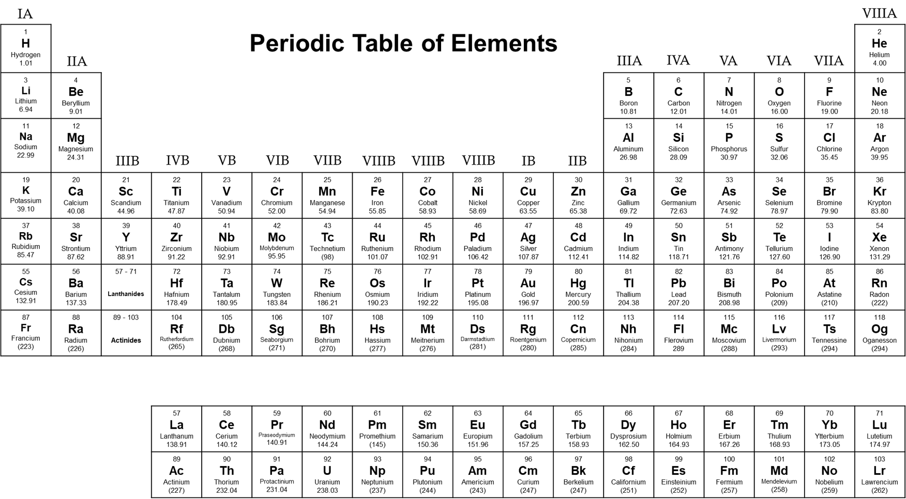

Fundamental Chemistry & Materials
Comprehensive synthesis of Lucent GK Chemistry: Atomic theory and quantum numbers, Moseley's Modern Periodic Table and trends, acids, bases and the pH scale, salts and Aqua Regia, metallurgy and essential alloys (Brass, Bronze, German Silver), carbon allotropes, and industrial polymers.

Matter, Atomic Structure & Medical Radioisotopes
Fundamental particles, states of matter, isotopes, and diagnostic applications
Five States of Matter
- Solid, Liquid & Gas: Governed by intermolecular forces and thermal kinetic energy.
- Plasma (4th State): Super-heated ionized gas composed of free electrons and positive ions (stars, lightning, neon sign tubes).
- Bose-Einstein Condensate (5th State): Formed by cooling dilute gas of bosons to near absolute zero (0 K). Predicted by S.N. Bose and Albert Einstein in 1924; created experimentally by Cornell & Wieman in 1995.
Subatomic Particles & Discovery
Discovered by J.J. Thomson (1897) in Cathode Ray experiment.
Observed by Goldstein (Canal Rays 1886); identified by Rutherford.
Discovered by James Chadwick (1932) by bombarding Beryllium.
Isotopes, Isobars & Medicine
- Isotopes: Same atomic number (Z), different mass number (A). E.g. Protium (¹H), Deuterium (²H - heavy water D₂O), Tritium (³H - radioactive).
- Isobars: Same mass number (A), different Z (e.g. ⁴⁰Ar and ⁴⁰Ca).
- Diagnostic Radioisotopes:
- Cobalt-60: Cancer radiation therapy (gamma rays).
- Iodine-131: Thyroid disorders and goiter therapy.
- Carbon-14: Radiocarbon dating of fossils.
- Sodium-24: Blood circulation clots detection.
Modern Periodic Law & Periodic Trends
Structure of 7 Periods and 18 Groups, atomic radii, and ionization metrics
Evolution of Periodic Law
- Mendeleev's Periodic Table (1869): Arranged by increasing atomic weight. Predicted missing elements: Eka-aluminium (Gallium), Eka-boron (Scandium), Eka-silicon (Germanium).
- Modern Periodic Law (Henry Moseley 1913): Physical and chemical properties of elements are periodic functions of their Atomic Number (Z).
- Structure: 7 Horizontal Periods and 18 Vertical Groups. Group 1: Alkali metals; Group 2: Alkaline earth metals; Group 17: Halogens; Group 18: Noble / Inert gases.
High-Yield Periodic Trends Summary Table
| Periodic Property | Across a Period (Left to Right) | Down a Group (Top to Bottom) | Key Exam Exception / Extreme |
|---|---|---|---|
| Atomic Radius | Decreases | Increases | Francium (Fr) is largest; Helium (He) is smallest. |
| Ionization Energy | Increases | Decreases | Helium (He) has highest; Francium (Fr) has lowest. |
| Electron Affinity | Increases | Decreases | Chlorine (Cl) has HIGHER affinity than Fluorine (F). |
| Electronegativity | Increases | Decreases | Fluorine (F = 4.0) is the most electronegative element. |
| Metallic Character | Decreases | Increases | Metals occupy left; non-metals occupy upper right. |
Acids, Bases, the pH Scale & Everyday Chemical Salts
Natural organic acids, Aqua Regia chemistry, and household commercial salts
Natural Acids & Sources
- Acetic Acid (CH₃COOH): Vinegar (4–8% solution).
- Citric Acid: Lemons, oranges, citrus fruits.
- Lactic Acid: Sour milk, yogurt / curd.
- Tartaric Acid: Tamarind, grapes, unripe mangoes.
- Formic Acid (Methanoic Acid): Ant and bee stings (causes burning sensation; neutralized by baking soda).
- Oxalic Acid: Tomatoes, spinach; used to remove rust ink stains.
- Aqua Regia: Conc. HNO₃ + Conc. HCl in 1 : 3 ratio (dissolves gold & platinum).
The pH Scale & Indicators
Formulated by S.P.L. Sørensen (1909): pH = −log₁₀[H⁺].
Indicators: Litmus turns red in acid, blue in base; Phenolphthalein turns pink in base, colorless in acid; Methyl orange turns red in acid, yellow in base.
Everyday Salts & Formulas
Metallurgy, Important Ores & Major Alloys
Abundances in Earth's crust, key metal extractions, and non-ferrous alloys
Principal Ores of Important Metals
| Metal | Principal Ores | Chemical Formula |
|---|---|---|
| Aluminium | Bauxite, Cryolite | Al₂O₃·2H₂O |
| Iron | Haematite, Magnetite | Fe₂O₃, Fe₃O₄ |
| Copper | Copper Pyrites, Malachite | CuFeS₂ |
| Lead | Galena | PbS |
| Mercury | Cinnabar | HgS |
| Uranium | Pitchblende | U₃O₈ |
| Thorium | Monazite Sand | ThO₂ |
*Abundance: Oxygen (46.6%) > Silicon (27.7%) > Aluminium (8.1% - most abundant metal) > Iron (5.0%).
Major Commercial Alloys
Carbon Allotropes, Fuels & Industrial Polymers
Diamond, graphite, LPG/CNG composition, rubber vulcanization, and synthetic polymers
Carbon Allotropes
- Diamond: sp³ hybridized carbon tetrahedral network; hardest known natural substance; high refractive index (2.42); non-conductor of electricity.
- Graphite: sp² hybridized hexagonal layered sheets with free delocalized electrons; good conductor of electricity; soft and slippery solid lubricant; used in pencil leads and nuclear moderators.
- Fullerenes (C₆₀): Buckminsterfullerene; soccer ball cage structure.
- Graphene: Single two-dimensional atomic layer of graphite with extraordinary electrical and tensile properties.
Industrial Fuels & Gases
Polymers & Synthetic Materials
- Vulcanization of Rubber: Heating natural isoprene rubber with Sulfur (forming disulfide crosslinks) to eliminate stickiness and increase elasticity (Goodyear 1839).
- Teflon (PTFE): Polytetrafluoroethylene; heat-resistant, chemically inert non-stick coating for cookware.
- Bakelite: Phenol-formaldehyde thermosetting resin; excellent electrical insulator used in switches and plugs.
- Rayon: Artificial silk made by chemical processing of natural cellulose pulp.
- Nylon-6,6: First fully synthetic fiber made from adipic acid and hexamethylenediamine.
Active Recall Flashcards
Interactive 3D flip cards covering periodic trends, chemical formulas, ores, and polymer chemistry
High-Yield Prelims Exam Simulator
Five standard multiple-choice questions on Plaster of Paris, electron affinity, German silver, and Aqua Regia